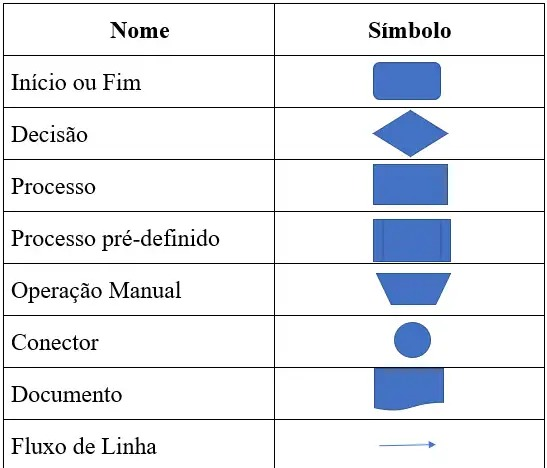

O que são Algoritmos?
Algoritmos são sequências lógicas de passos para resolver um problema ou realizar uma tarefa. Eles são a base de toda programação e podem ser representados de várias formas:
Pseudocódigo
Descrição textual dos passos em linguagem próxima à humana
Fluxogramas
Representação visual com símbolos para cada tipo de operação
Linguagem de Programação
Implementação concreta que o computador pode executar
Blocos Visuais
Montagem de instruções como peças de quebra-cabeça
Estruturas Básicas de Algoritmos
Todos os algoritmos são construídos com três estruturas fundamentais:
Pegar copo
Abrir garrafa
Despejar líquido no copo
Beber
# CONDIÇÃO - Decisões (se...então...senão)
se temperatura > 30°C então
Vestir roupa leve
senão
Vestir casaco
fim_se
# REPETIÇÃO - Loops (enquanto/para)
enquanto copo não cheio faça
Despejar mais líquido
fim_enquanto
Laboratório de Programação
Experimente programar diretamente no seu navegador com este ambiente interativo:
Desafio: Calculadora Simples
Crie um algoritmo que:
- Pergunte ao usuário dois números
- Pergunte qual operação deseja (+, -, *, /)
- Mostre o resultado da operação
- Pergunte se quer fazer outra operação
Dica: Use estruturas condicionais para cada operação e um loop para repetir.
Ver Solução ExemploFluxogramas: Algoritmos Visuais
Representação gráfica usando símbolos padronizados:
Atividade: Criar um Fluxograma
Desenhe um fluxograma para:
- Decidir que roupa vestir baseado no clima
- Processo de login em um site
- Receita de seu prato favorito
Depuração (Debugging)
Encontrar e corrigir erros em algoritmos é parte essencial do processo:
algoritmo MediaNotas
nota1 = "8.5" # Erro: número como texto
nota2 = 7.0
media = (nota1 + nota2) / 2 # Isso causará um erro!
escreva "Média:", media
fim_algoritmo
Técnicas de depuração:
- Testar com valores conhecidos
- Verificar cada passo do algoritmo
- Procurar por erros comuns (tipos de dados, ordem de operações)
Próxima Aula
No próximo módulo, exploraremos "Ferramentas Digitais", aprendendo a usar editores de texto, planilhas e apresentações de forma eficiente.
Pré-visualizar Módulo 4